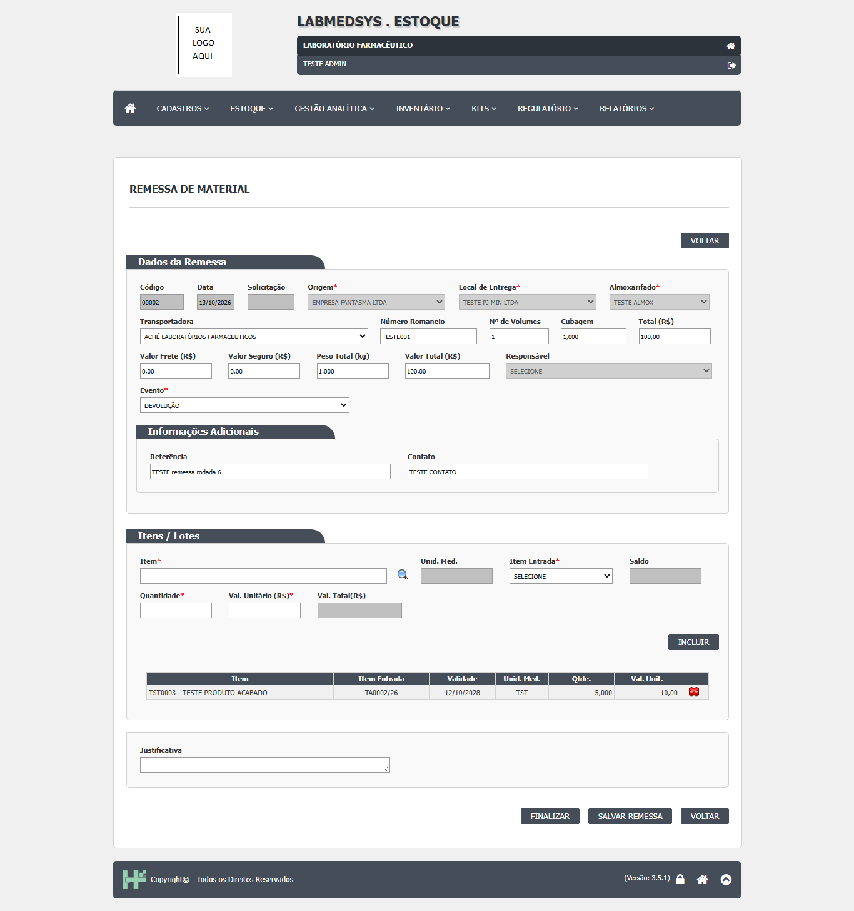

Introdução
Este manual orienta o uso do módulo Estoque do LabMedSys (versão 3.5.1). O Estoque registra a entrada dos materiais (recebimento, entradas da produção e avulsas), a guarda (endereços, quarentena, movimentações), o uso (solicitação, separação e atendimento à produção), a saída (remessa, devoluções), a reanálise e a revalidação dos lotes, o inventário, os kits e as amostras de referência, retenção e estabilidade.
O manual foi escrito a partir das telas do sistema e dos testes realizados no ambiente de teste em sete rodadas, de 07 a 13/10/2026. Descreve como o sistema funciona hoje. Onde o teste encontrou uma falha que afeta o uso, há um quadro Atenção com o cuidado a tomar e o número do desvio registrado no documento Defeitos para Correção. Telas não testadas estão indicadas; o que é dito sobre elas vem do código.
A quem se destina
- Almoxarifado: recebimento, conferência, endereçamento, movimentação, separação, atendimento, remessa e inventário.
- Controle da Qualidade: amostragem, laudo e atualização do resultado no Estoque; amostras de referência, retenção e estabilidade.
- Compras e Garantia da Qualidade: pedido de compra e avaliação do fornecedor.
- Administradores: cadastros de apoio e ligação dos almoxarifados aos grupos de usuário.
Convenções
- Os nomes de menus, telas, botões e campos aparecem em negrito, como na tela.
- Campos marcados com asterisco (*) são obrigatórios.
- As figuras com nomes "TESTE" foram tiradas do ambiente de teste e usam dados fictícios.
- "DV-EST-nnn" é o número do desvio no documento Defeitos para Correção.
Acesso ao Estoque
1. Entre no LabMedSys pelo Principal (usuário e senha) e, na tela inicial, clique em Estoque.
2. O menu do Estoque mostra só as telas liberadas para o seu perfil no Principal. Se o sistema recusar a tela com a mensagem sobre o seu perfil, peça ao administrador para marcar no seu perfil as funções do Estoque que você usa. A mensagem não diz qual função falta.
3. Você só vê os almoxarifados ligados ao seu grupo de usuário (tela Grupo Usuário - Almoxarifado). Se um almoxarifado não aparece numa lista, é porque o seu grupo não está ligado a ele.
O menu tem sete partes: Cadastros, Estoque, Gestão Analítica, Inventário, Kits, Regulatório e Relatórios.
Padrão de uso das telas
Pesquisar
Toda tela abre numa lista com filtros no alto. Preencha um ou mais filtros e clique em Pesquisar; Limpar apaga os filtros. A lista mostra os registros com os ícones de ação (editar, consultar, excluir, imprimir) conforme a sua permissão.
Incluir e alterar
Clique em Incluir para abrir o cadastro em branco, preencha os campos obrigatórios e clique em Salvar. Para alterar, clique no ícone de editar na lista. A alteração e a exclusão da maior parte dos cadastros pedem uma Justificativa, que fica no histórico.
Atenção
- Preencha a Justificativa antes de gravar. Em algumas telas, quando ela está em branco, o sistema mostra a mensagem da justificativa e, logo abaixo, uma segunda mensagem de erro que não tem a ver com o problema (DV-EST-046). A primeira mensagem é a que vale.
- Na tela de Item, alguns botões recarregam a tela e apagam os números digitados (DV-EST-006). Preencha os números por último, logo antes de salvar.
Quantidades
Nos campos de quantidade, o sistema trata o número digitado como se a vírgula já estivesse colocada: digitar 100 pode gravar 0,100 (DV-EST-002, DV-EST-021). Confira o valor que ficou no campo antes de salvar.
Endereços
Um endereço de estoque é formado por almoxarifado, local, rua, coluna e andar e aparece como L905-R905-C905-A905. Em toda tela que pede um endereço de destino, escolha os cinco níveis. Se o campo Endereço Destino mostrar R000-C000-A000, falta rua, coluna ou andar: não finalize.
Atenção
Na Movimentação de Quarentena, a tela aceita um destino incompleto e, ao finalizar, grava a saída do lote sem a entrada: o saldo do lote some (DV-EST-044). Confira sempre o endereço completo antes de clicar em Finalizar.
Consultar o histórico (log)
O ícone de histórico (log) na lista mostra as inclusões e alterações do registro, com usuário, data e justificativa. No Estoque, as mudanças de saldo não aparecem nesse histórico: elas ficam nas movimentações e no Histórico do Lote.
Mensagens
As mensagens de sucesso e de erro aparecem no alto da tela ou numa janela. Em algumas telas a mensagem de sucesso aparece mesmo quando nada foi gravado (Endereçamento, DV-EST-016). Nos passos marcados "Confira", abra a consulta indicada para confirmar que a gravação aconteceu.
Cadastros de apoio
Menu Cadastros. Faça nesta ordem, porque um depende do outro.
Almoxarifado, Local de Armazenagem, Rua, Coluna e Andar
1. Almoxarifado: código, descrição e tipo (comum, referência, retenção ou estabilidade). O tipo decide em que telas o almoxarifado aparece: só um almoxarifado do tipo Retenção recebe amostras de retenção.
2. Grupo Usuário - Almoxarifado: ligue o almoxarifado aos grupos de usuário que vão usá-lo. Sem essa ligação, ninguém o vê.
3. Local de Armazenagem: dentro do almoxarifado, com a marcação de quarentena, refugo, refrigerado ou controlado. Os locais de quarentena e de refugo são os únicos destinos possíveis para lotes em quarentena e reprovados.
4. Estoque Rua, Estoque Coluna e Estoque Andar: as três divisões do local.
5. Endereço do Estoque (menu Estoque): combine local, rua, coluna e andar, com altura, largura, profundidade e peso máximo. Um endereço com saldo não pode ser excluído. A exclusão não pede justificativa (DV-EST-018).
Unidade de Medida
Código e descrição. Ao salvar, o sistema cria sozinho a apresentação com a mesma unidade.
Item
Dados do item (código, descrição, grupo, subgrupo, custo), parâmetros de armazenagem (unidade, estoque mínimo e máximo, peso, dimensões, refrigerado), controles (lote, validade, quarentena, análise físico-química e microbiológica, retenção, estabilidade, pesagem) e os almoxarifados de movimentação.
Atenção
- Preencha o Almoxarifado de Identificação. Sem ele, o item salva, mas o recebimento falha depois com "Erro ao Finalizar Recebimento!" (DV-EST-010).
- O campo da classificação de reanálise (prazo da primeira reanálise) não aparece na tela, em nenhuma combinação de controles (DV-EST-043). Hoje não é possível ligar um item novo a uma classificação pela tela, e por isso a Agenda de Reanálise não lista os lotes desse item (DV-EST-041).
Classificação de Reanálise
Código, descrição e o percentual da validade em que a primeira reanálise vence (por exemplo, 50%). A tela funciona; o que não funciona é ligá-la ao item (acima).
Demais cadastros
Grupo e Subgrupo do Item, NCM, Centro de Custo, Natureza da Operação, Substância Controlada, Conta Financeira, Conversão de Unidade e de Fornecedor, SJB, Tipo de Referência, Motivo da Movimentação, Parâmetros do Estoque, Classe, Classificação e Condição de Armazenagem do Item, Nível de Segurança, Conta Corrente, Tipo de Movimentação: cadastros simples de código e descrição, não testados nesta homologação. Seguem o padrão de uso das telas.
Recebimento de material
Menu Estoque. O caminho completo é: inspeção do veículo → recebimento → autorização → conferência → endereçamento → quarentena e análise no CQ.
Checklist de Inspeção Veicular
1. Incluir: placa, condutor, tipo e número do documento, tipo de movimento, pesos de entrada e de saída, justificativa.
2. Responda as 15 perguntas e dê o parecer (Aprovado ou Reprovado). Salvar.
Atenção
- A tela deixa salvar "Aprovado" sem nenhuma resposta (DV-EST-004). Responda todas as perguntas: o checklist é a prova da inspeção exigida pela norma.
- Um checklist Reprovado continua aparecendo para uso no recebimento (DV-EST-011). Não use um veículo reprovado.
Recebimento de Material
1. Incluir: fornecedor, data do recebimento, checklist do veículo (placa e motorista vêm dele), nota fiscal (número, série, data, valores).
2. Na seção de itens, informe o item, a quantidade e, para cada item, os lotes: código do lote, validade, fabricante e quantidade. Item, lote e fabricante repetidos na mesma nota são recusados.
3. Salvar. O recebimento fica aguardando a autorização.
4. Autorização: outra pessoa (quem cadastrou não pode autorizar) abre o recebimento e informa usuário e senha no quadro de autorização.
5. Confirmar recebimento.
Atenção
- O código do lote perde os hífens e outros sinais:
TESTE-LOTE-001viraTESTELOTE001(DV-EST-001). Anote o código original no campo de observação. - A tela aceita lote com validade vencida sem aviso (DV-EST-014). Confira a validade na embalagem antes de gravar.
- Sem a data do recebimento, o botão SIM não faz nada e não avisa (DV-EST-003). Sem a série da nota, não grava e não avisa (DV-EST-013).
- O recebimento pode ser salvo sem checklist, sem placa e sem motorista (DV-EST-012). Preencha sempre.
- A avaliação do fornecedor não bloqueia o recebimento de fornecedor reprovado (DV-EST-022). Consulte a avaliação antes de receber.
Conferência de Recebimento
1. Abra a nota recebida, confira as quantidades de cada volume e clique em Finalizar.
Atenção
Finalizar a conferência termina com "Erro ao redistribuir quantidade dos volumes" e, mesmo assim, a nota fica marcada como conferida (DV-EST-015). Uma divergência de quantidade é aceita só com "Deseja continuar?", sem justificativa. Registre a divergência na Qualidade por fora.
Endereçamento de Material
1. Abra a nota conferida, escolha o lote, o endereço de quarentena e a quantidade, e clique em Finalizar.
Atenção
A tela mostra "Endereçamento Finalizado com sucesso!" sem gravar nada: o lote fica sem saldo, sem histórico e sem solicitação de análise no CQ, e a nota continua "Endereçado = NÃO" (DV-EST-016; causa no banco, com o DBA). Confira na Disponibilidade do Lote se o saldo apareceu em quarentena. Enquanto o defeito não é corrigido, o caminho que funciona é a Entrada de Material - Outras (abaixo), que grava a entrada e abre a análise.
Entradas de material
Menu Estoque. As duas telas gravam a entrada direto no estoque, em quarentena, e abrem a solicitação de análise no Controle da Qualidade.
Entrada de Material - Outras
1. Incluir: tipo de movimentação (ENTRADA - OUTRAS), motivo, item, lote, validade, fabricante, custo, quantidade, quantidade do volume, endereço de quarentena e justificativa. Salvar: "Movimentação gerada!".
2. Confira: Disponibilidade do Lote mostra o saldo em quarentena, e a tela Controle da Qualidade mostra a análise "AGUARDANDO ANÁLISE".
Entrada de Material - Produção
Mesmo uso, para produto acabado vindo da produção, com a ordem de produção (opcional) e a etiqueta.
Atenção
- A tela aceita lote inventado, sem ordem de produção (DV-EST-024), e lote com validade vencida (DV-EST-025). Informe sempre a ordem de produção e confira a validade.
- A análise abre no CQ como tipo NORMAL, não "produto acabado" (DV-EST-026). Avise o CQ.
Devolução e Devolução da Produção
Devolução (material que volta de uma saída): exige lote já existente com o mesmo item, validade e fabricante, e abre análise no CQ. Devolução da Produção (sobra de uma ordem): só aceita lotes que saíram por uma solicitação do tipo Produção, ligada a uma Ordem de Produção; a sobra volta direto ao saldo, sem análise. Telas não testadas (a segunda ficou bloqueada por falta de Ordem de Produção no ambiente).
Quarentena, análise e liberação
Controle da Qualidade (tela do Estoque)
Lista as análises abertas pelas entradas, com a situação (aguardando análise, em análise, laudo emitido). O ciclo da análise (programação da coleta, amostragem, programação da análise, digitação dos resultados, aprovação e emissão do laudo) é feito no módulo Controle da Qualidade. Durante a amostragem, o CQ pede ao Estoque a Separação de Material da amostra (abaixo).
Atualizar resultado: depois de o laudo ser emitido no CQ, abra a análise nesta tela e clique em Atualizar resultado. Só então o Estoque fica sabendo do laudo.
Atenção
O Estoque não é avisado do laudo (DV-EST-029). Sem o clique em Atualizar resultado, o lote aprovado continua em quarentena (ou em reanálise), e o lote reprovado continua "Solicitado". Combine com o CQ quem faz esse passo a cada laudo.
Movimentação de Quarentena
Leva o lote aprovado da quarentena para um local comum, ou o lote reprovado para o refugo.
1. Abra o lote na lista (a tela mostra o número do laudo e o resultado). Só lotes com laudo têm o botão de editar.
2. Escolha o Endereço Origem e a quantidade a endereçar.
3. No Destino, escolha almoxarifado, local, rua, coluna e andar. Confira que Endereço Destino mostra o endereço completo (por exemplo L903-R901-C901-A901). Clique em Confirmar endereço: a linha aparece na grade.
4. Finalizar: "Movimentação finalizada!".
5. Confira: Disponibilidade do Lote: a quantidade saiu de Quarentena e entrou em Disponível (ou em Reprovado, se o destino é refugo).

Atenção
- Nunca finalize com o destino incompleto (
R000-C000-A000): o saldo do lote some (DV-EST-044). Se a grade disser "Nenhum endereço foi encontrado" depois de Confirmar endereço, o destino está errado. - A lista também mostra o lote reprovado; para ele, só o local de refugo é oferecido.
Movimentação de Material
Transfere um lote entre endereços comuns.
1. Incluir: tipo de movimentação, item, lote, endereço de origem, quantidade, endereço de destino (cinco níveis) e justificativa. Confirmar endereço e Finalizar.
O sistema recusa: quantidade acima do saldo da origem; destino que já guarda outro item; item que não cabe no destino (dimensões ou peso); o mesmo endereço em duas movimentações. Lote em quarentena só vê locais de quarentena como destino; lote reprovado só vê refugo.
Atenção
Com item refrigerado, a lista de destinos pode ficar vazia mesmo havendo local refrigerado com endereço livre (DV-EST-042). Confira o cadastro do local e do endereço.
Reanálise e revalidação
Agenda de Reanálise
Lista os lotes cuja data de reanálise cai no período pesquisado e permite agendar, o que abre uma análise de reanálise no CQ e tira o lote do saldo disponível.
Atenção
A agenda só lista lotes de itens que têm classificação de reanálise, e hoje esse campo não aparece no cadastro do Item (DV-EST-043); por isso a lista pode vir vazia (DV-EST-041). Use a Reanálise - Avulsa enquanto isso.
Reanálise - Avulsa
1. Localize o lote e clique em agendar a reanálise. O sistema abre a análise no CQ e o lote sai do disponível (passa a "Reanálise"). Não pede justificativa (DV-EST-039).
2. O CQ faz a análise e emite o laudo. No Estoque, abra a análise na tela Controle da Qualidade e clique em Atualizar resultado: o lote volta ao disponível.
O sistema recusa lote bloqueado e lote com análise em aberto, com uma mensagem genérica nos dois casos (DV-EST-039).
Revalidação de Lote
Pede ao CQ uma análise de revalidação; a validade só muda com o laudo. A lista só mostra lotes vencidos e, quando vazia, mostra uma linha com zeros e o botão Editar, que não faz nada (DV-EST-040).
Solicitação, separação e atendimento à produção
Solicitação de Material (Consumo e Produção)
1. Incluir: tipo, prioridade, centro de custo (ou cliente), itens e quantidades. Salvar: a solicitação nasce aberta.
2. Aprovação de Solicitação (tela própria, não testada): aprova, reprova ou cancela, com justificativa, conforme os tipos de solicitação liberados para o perfil.
Separação de Material
Separa os lotes para uma solicitação aprovada ou para a amostra do CQ. A lista de lotes mostra só lotes disponíveis: fora de quarentena, não reprovados, não bloqueados, não em reanálise e dentro da validade. A lista não é ordenada pela validade: escolha você o lote que vence antes. Confirmar: "Separação confirmada!". O cancelamento exige justificativa.
Atenção
A amostra do CQ sai do estoque sem passar pela Central de Pesagem (DV-EST-032). Pese e registre por fora, se o procedimento exigir.
Atendimento de Solicitação
1. Abra a solicitação pendente, escolha o lote e a quantidade (não pode passar da solicitada nem do saldo: "Saldo insuficiente para atender o item!").
2. Atender e Salvar: "Atendimento finalizado!". O saldo do lote e do endereço baixam, e a quantidade vai para "Solicitação" no saldo.
Atenção
A tela não tem campo de justificativa (DV-EST-045). Se atender quantidade ou lote diferentes do previsto, registre o motivo por fora.
Remessa e expedição
Remessa de Material
1. Incluir: origem, local de entrega (cliente), almoxarifado, transportadora, romaneio, volumes, pesos, valores, evento, referência e contato. Salvar Remessa.
2. Em Itens / Lotes, busque o item, escolha o Item Entrada (lote), quantidade e valor, e Incluir. A lista de lotes já exclui lotes em quarentena, reprovados, bloqueados e em reanálise.
3. Preencha a Justificativa e clique em Finalizar.

Atenção
Finalizar a remessa não funciona: termina sempre em "Erro ao gerar a solicitação do material!", com ou sem justificativa (DV-EST-046). A remessa fica sem data de liberação, sem baixa de saldo e sem aviso à Rastreabilidade. Até a correção, a expedição precisa ser registrada por outro meio e a baixa feita por Saída de Material (não testada), com a Qualidade ciente.
Saída de Material e Saída por Nota Fiscal
Saída avulsa (data, tipo e motivo, item, lote, endereço, quantidade, justificativa) e saída por nota (cliente, chave da nota, justificativa). Não testadas.
Amostras de referência, retenção e estabilidade
Menu Regulatório.
Entrada de Material (Regulatório)
1. Tipo "ENTRADA - RETENÇÃO" (ou referência, estabilidade), item, lote, quantidade e o endereço de um almoxarifado do tipo correspondente (retenção, referência ou estabilidade), ligado ao seu grupo. Finalizar: "Movimentação finalizada!". O saldo do lote passa para a coluna de retenção.
Atenção
- Se nenhum almoxarifado aparecer no destino, não existe almoxarifado desse tipo ligado ao seu grupo. Cadastre (Almoxarifado, tipo Retenção; Grupo Usuário - Almoxarifado; Local; Endereço).
- Depois de gravada, a amostra não aparece na Consulta Disponibilidade nem na Saída (DV-EST-047): hoje não é possível localizar nem dar saída numa amostra pela tela. Controle as amostras por fora até a correção.
Movimentações (saída) e Consulta Disponibilidade
Saída da amostra, com justificativa, e consulta por item e lote. Não funcionam para amostras gravadas pela entrada (DV-EST-047).
Inventário
Menu Inventário: Inventário (abertura), Contagem, Auditoria/justificativa e Apuração. O inventário trava os endereços escolhidos, aceita até três contagens (a terceira divergente com justificativa) e a apuração ajusta os saldos.
Atenção
O inventário não abre enquanto houver recebimentos ou solicitações pendentes nos parâmetros informados: "Existem solicitações não finalizadas para os parâmetros informados!". Encerre as pendências antes. As telas ficaram bloqueadas no teste por esse motivo.
Consultas e relatórios
- Disponibilidade do Lote, Disponibilidade de Estoque e Disponibilidade por Local: saldo por item, lote e local, separado por situação (disponível, quarentena, vencido ou reanálise, bloqueado, reprovado, inventário, retenção, referência, estabilidade, solicitação, separação). Use-as para conferir toda gravação.
- Consulta Endereço Item: o que há em cada endereço.
- Histórico do Lote: movimentações, solicitações, análises e notas ligadas ao lote. Não mostra quem fez cada movimentação, a hora, o laudo, quem aprovou nem a reprovação (DV-EST-034).
- Relatórios (menu Relatórios): 25 relatórios de movimentação, quarentena, reanálise, kits e inventário, não testados.
Compras e avaliação do fornecedor
Menu Gestão Analítica.
- Análise de Estoque: necessidade de compra por grupo e período. Aceita período maior que 12 meses (DV-EST-020).
- Curva ABC: aceita período no futuro (DV-EST-019).
- Pedido de Compra: itens, quantidades e custos; pode ser gerado da análise. Quantidade "100" vira 0,100; pedido aberto não reabre pela lista; falta de fornecedor não avisa (DV-EST-021).
- Avaliação do Fornecedor: avaliação por entrega (nota fiscal e lote), com pontuação. Não qualifica nem bloqueia o fornecedor no recebimento (DV-EST-022) e, depois de gravada, não pode ser alterada nem tem histórico (DV-EST-023).
Kits
Menu Kits: Cadastro, Solicitação, Controle, Parâmetros, Planejamento e Análise do Planejamento de Kits. Não testados.
Cuidados que resumem os testes
| Onde | Cuidado | Desvio |
|---|---|---|
| Qualquer tela | Preencher a Justificativa antes de gravar; conferir o valor nos campos de quantidade | DV-EST-002, 021, 046 |
| Recebimento | Conferir validade e código do lote; responder todo o checklist; consultar a avaliação do fornecedor | DV-EST-001, 004, 011, 014, 022 |
| Endereçamento | Conferir na Disponibilidade do Lote se gravou; usar a Entrada de Material - Outras enquanto não corrige | DV-EST-016 |
| Laudo do CQ | Clicar em Atualizar resultado na tela Controle da Qualidade a cada laudo | DV-EST-029 |
| Movimentação de Quarentena | Destino com rua, coluna e andar; nunca R000-C000-A000 |
DV-EST-044 |
| Reanálise | Usar a Reanálise - Avulsa; a agenda depende de um campo que a tela do Item não mostra | DV-EST-041, 043 |
| Remessa | Finalizar não conclui; registrar a expedição por outro meio até a correção | DV-EST-046 |
| Amostras de retenção | A entrada grava, mas a consulta e a saída não encontram a amostra; controlar por fora | DV-EST-047 |
| Inventário | Encerrar recebimentos e solicitações pendentes antes de abrir | — |